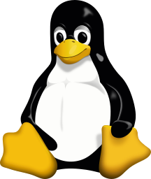

WindowsInstaller
Installs the launcher, with Start menu and desktop shortcuts.
YW4-Recomp-Launcher-1.2.0-setup.exe
WindowsPortable zip
The same launcher with no installer: unpack it anywhere and run it.
YW4-Recomp-Launcher-1.2.0-portable.zip

LinuxAppImage Make it executable (chmod +x) and run it.
YW4-Recomp-Launcher-1.2.0-x86_64.AppImage
Bring your own game: nothing from the game comes with it. You need your own copy of Yo-kai Watch 4++ with the 2.2.0 update. The launcher checks your files, builds the game on your PC once (about 10 to 15 minutes) and starts it. Step by step: the launcher's page.
Every file and its checksum: all releases on GitHub. The "Game update" releases there are for the launcher; don't download those.